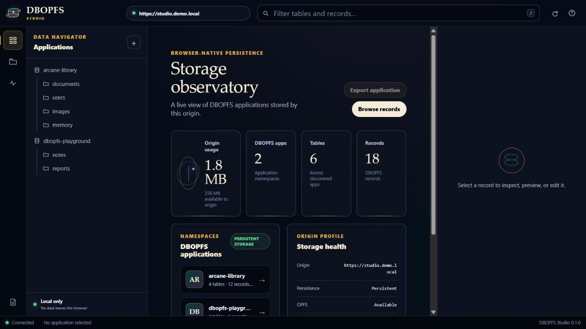
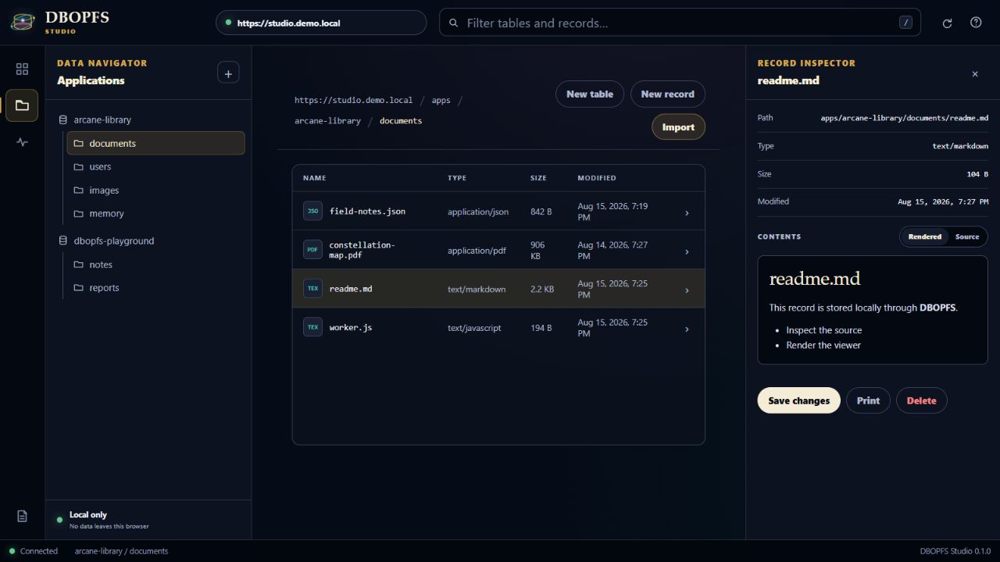

DBOPFS-aware workspace
Inspect data as applications, tables, and records.
DBOPFS Studio presents the connected origin's DBOPFS application folders as database concepts instead of an unexplained raw file tree. The current Studio can inspect storage use, browse and filter records, edit supported text formats, preview browser-supported media, import files, export an application, print supported records, and guard destructive record deletion with exact-name confirmation.
The current 0.1 interface is limited to discovered DBOPFS application namespaces. Raw OPFS browsing, rename, move, copy, table deletion, restore, and origin-wide clear are not exposed in the current Studio UI.
Open from the extension.
Use the pinned toolbar icon while your site is active. Studio opens in a browser tab connected to that current site's origin.
Open from DevTools.
Open DevTools (the Console), select the dedicated DBOPFS Studio panel, and launch a Studio window connected to the inspected page.
The connected workspace
See DBOPFS Studio in use.
These screenshots come from the shipped Studio interface in its local demonstration mode. The sample origin and records are fictional; the dashboard, navigator, explorer, record inspector, and connection indicators are the real product UI.
{kind=link}

{kind=link}

Install from source
Load the extension in Chromium.
DBOPFS Studio is currently distributed from its source repository as an unpacked Manifest V3 extension. Clone it in a Terminal (Command Prompt or PowerShell), or download and extract the repository ZIP.
git clone https://github.com/TheWizardNexus/DBOPFS-Studio.git| Browser | Open this address |
|---|---|
| Google Chrome | chrome://extensions |
| Microsoft Edge | edge://extensions |
| Brave | brave://extensions |
| Vivaldi | vivaldi://extensions |
| Opera | opera://extensions |
- Open the matching address in the browser.
- Enable Developer mode.
- Choose Load unpacked.
- Select the repository's
extension/folder—the folder that containsmanifest.json. - Pin DBOPFS Studio if you want the toolbar entry to remain visible.
- Reload site tabs that were already open when you installed the extension.
Browser addresses are not Terminal commands. Open the matching internal address in the browser address bar.
The extension declares Chrome 109 as its minimum version. Chrome and Microsoft Edge are first-class targets; Brave, Vivaldi, Opera, and other current Chromium browsers are compatibility targets whose privacy controls and extension behavior may differ.
The official Studio installation guide contains current browser-specific notes, update instructions, and compatibility guidance.
Current site
Connect from the browser toolbar.
- Open the HTTPS site or localhost page whose DBOPFS data you want to inspect.
- Keep that site as the active browser tab.
- Select the DBOPFS Studio extension icon in the toolbar.
- Verify the origin shown in the popup, then choose Open Studio.
- Verify the connected origin displayed in Studio before editing or deleting data.
Studio opens in a normal browser tab and remains bound to the site tab selected when you launched it. Keep that site tab open while you work. To connect another origin, open Studio from that site's tab.
Inspected site
Connect from DevTools (the Console).
- Open the HTTPS site or localhost page whose DBOPFS data you want to inspect.
- Open DevTools (the Console) on that page.
- Select the DBOPFS Studio panel. If it is not visible, check the DevTools panel overflow menu.
- Choose Open Studio window.
- Verify that Studio displays the inspected site's origin.
The extension adds a dedicated Studio launcher panel to DevTools. The panel opens a separate Studio window connected to the page DevTools is inspecting; there is no launcher command to paste into the JavaScript Console tab.
Keep the inspected site tab open while you work. Studio cannot continue operating against a page after that target tab closes.
One live origin at a time
Know which site is connected.
Protocol, hostname, and port define an origin. For example, https://app.example and https://admin.example have separate OPFS storage, and different ports on localhost are separate origins. Studio works through one selected live tab and does not merge unrelated sites into one filesystem.
The extension's dormant isolated bridge waits on permitted pages until Studio sends a request. On first use it loads the packaged DBOPFS agent in the extension's isolated content-script world, while browser storage calls remain scoped to the connected website. Inspected content stays in the browser unless you intentionally export, download, copy, or print it.
Use HTTPS or localhost. OPFS requires a secure browser context. Browser-internal pages, extension stores, other protected URLs, and closed sites cannot be connected.
Read the Studio architecture guide for the complete request flow and the privacy policy for its local-processing boundary.
Quick checks
When Studio cannot connect.
| What you see | What to check |
|---|---|
| The toolbar says the page is protected. | Use an ordinary HTTPS site or localhost page, not a browser settings page, extension page, or browser store. |
| The Studio panel is missing from DevTools. | Confirm the extension is loaded and enabled, then close and reopen DevTools. Check the panel overflow menu. |
| A site was already open when you installed the extension. | Reload that site tab so the extension's connection bridge is available, then launch Studio again. |
| Studio reports a connection error. | Keep the target tab open and confirm the browser grants DBOPFS Studio access to that site. |
| Studio opens on the wrong origin. | Return to the intended site and relaunch from its toolbar popup, or open DevTools on that exact page and use the Studio panel. |
| No applications or records appear. | Confirm the full origin, browser profile, and storage partition. The site may not have created DBOPFS data yet. |
For additional checks, continue to the Studio project's connection troubleshooting guide.